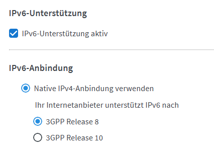
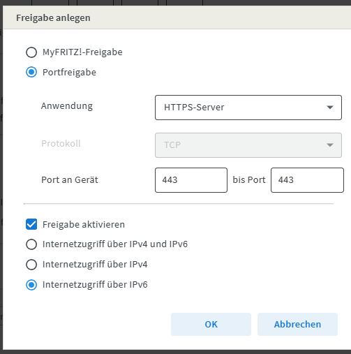

Hat schon jemand die korrekten Einstellungen für IPv4v6 (Duals Stack) auf der FritzBox 6850 / 5G gefunden? Egal was ich probiere, es funktioniert einfach nicht.
Die vielversprechendste Einstellung wäre die Native IPv4-Anbindung verwenden mit 3GP Release 8 - denn da bekommt das Modem sowohl IPv6 als auch IPv6 Adressen - aber dann geht im Netzwerk nix mehr - weder per ipv4 noch per IPv6...
IPv4 alleine funktioniert einwandfrei... aber wäre doch mal an der Zeit sich etwas mit IPv6 zu spielen.
Ich möchte den Post allerdings noch etwas ergänzen: Natürlich könnte ich mich auch mit dem ZTE Modem und IPv6 "spielen". ABER hinter dem ZTE Modem hängt eine Firewall... D.h. leider fahre ich für IPv4 derzeit TrippleNAT und verzichte auf IPv6 komplett. Warum?
Ganz simpel: Ich hab testhalber eine virtuelle Linux Maschine aufgesetzt und diese direkt an den ZTE MC801A angeschlossen. Sie hat damit sofort eine IPv6 Adresse bekommen. Und der Rechner war aus dem Internet über IPv6 1:1 erreichbar... D.h. jedes Gerät am Netz wäre mit seiner öffentlichen IPv6 automatisch komplett und ohne Firewall im Internet exposed. (Schneller Test für die Linux mit Ping, SSH und HTTP).
Und die "Firewall" im ZTE spottet jeder Beschreibung. Sollte jemand wissen wie ich da Filter für eingehende IPv6 Pakete definieren kann wäre ich sehr dankbar... Anleitung hätte ich keine gefunden!
-> Geräte, die am LAN oder WLAN hängen sind sind somit aus dem Internet auffindbar. (Ja das Scannen der IPv6 Bereiche dauert etwas länger als das der IPv4 - aber es ist nicht unmöglich) Es werden immer mehr Geräte, die am Netzwerk hängen... Smart Home lässt grüßen. (Fernseher, Heizungssteuerung, Netzwerkkameras,...) - und Hand aufs Herz - wer ändert wirklich alle Standardpasswörter?
Bearbeitet von gerdriese
Nun funktioniert es bei mir endlich... Eigentlich haben die Einstellungen gepasst, aber naja... EDV halt... (Ewig Drohendes Versagen und Ende Der Vernunft...)
Bei Internet -> Zugangsdaten -> IPv6:

Heimnetz -> Netzwerk -> Netzwerkeinstellungen -> IPv6 Einstellungen:
Sofern keine Freigaben geplant sind reicht es Nur DNS-Server zuweisen.
Freigaben sind dann über Internet -> Freigaben -> Portfreigaben möglich. Einfach ein Gerät für Freigaben hinzufügen und dann IPv6 entsprechend konfigurieren: (Hier darauf achten, dass die Interface ID am Gerät fix ist und mit der Freigabe übereinstimmt - im Zweifelsfall hier DHCPv6 verwenden - IA_PD und IA_NA)

und wenn der Host nicht freigegeben ist:
blockt die Fritz!box brav.
Ist die Anleitung noch aktuell und funktioniert die auch mit dem business.gprsinternet APN?
Bei mir steht bei denselben Einstellungen noch im Online-Monitor noch "Internet, IPv6 nicht verbunden"
@paul1508 , willkommen in unserer Community.
Solltest du hier keine Antwort bekommen, frage mal bei unseren Techniker*innen unter 0676 200 7777 nach. Lass dich ggf. von einem Expert zu diesem Thema zurückrufen.
Magentastische Grüße JD.
Ich habe auch Probleme mit dem Portsharing über Ipv6.
Vermutlich geschuldet am DS-Lite der Fritzbox 6660.
Nach außen hin scheint man eine ipv4 Adresse zu haben, die Fritzbox meldet aber eine IPv6 Adresse. Damit funktioniert das Portforwarding nicht über ipv5 bzw. Portsharing über ipv6.
Die oben gennante stettings habe ich probiert, leider ohne Erfolg. Den Punkt IPv6 Unterstützung gibts bei der Fritzbox Cable 6660 sowieso nicht. (Dual-Stack).
Ich muss wohl hoffen dass mich der Support auf IPv4 only umstellt mit einer richtigen öffentlichen IP.
https://schroederdennis.de/tutorial-howto/ds-lite-ipv6-tunnel-port-forwarding-nat-wireguard-vpn/
Hier wird genau die Problematik erklärt.
Bearbeitet von pootch{kind=link}
{kind=link}
{kind=link}
{kind=link}
{kind=link}